1 US Department of Agriculture - Diego Mendoza
1.1 Week 1 - 08/26 ~ 08/30
1.1.1 Wednesday
1.1.1.1 Overview
-Work on new data set based on previous skills -observe changes on different visual graphs -Explain any patterns or observe points -Test test and test again
1.1.1.2 Attitude
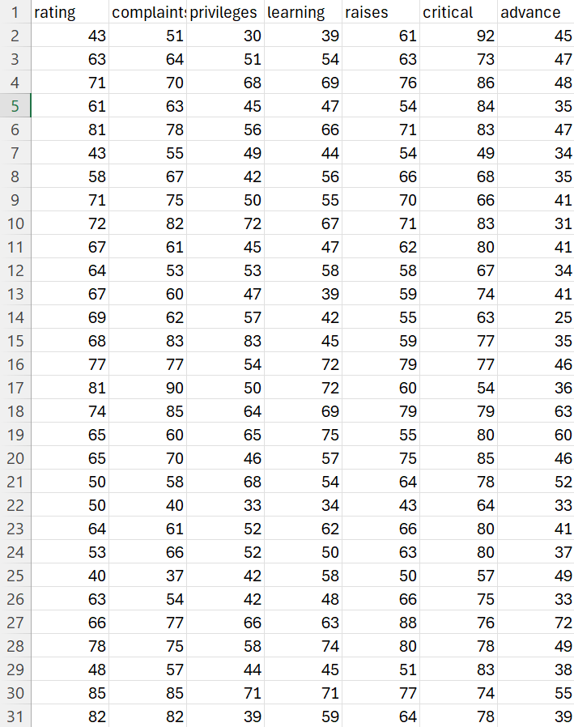
** Background Information **
- No context was given for the data set
- 7 columns: rating, complaint, privileges, leaning, raises, critical, advance
- Rating attitude
1.1.1.3 Filtering
(How to Follow) -Use Condition Formating (In Home) -Highlight cells, equalt too or less than (58.5)
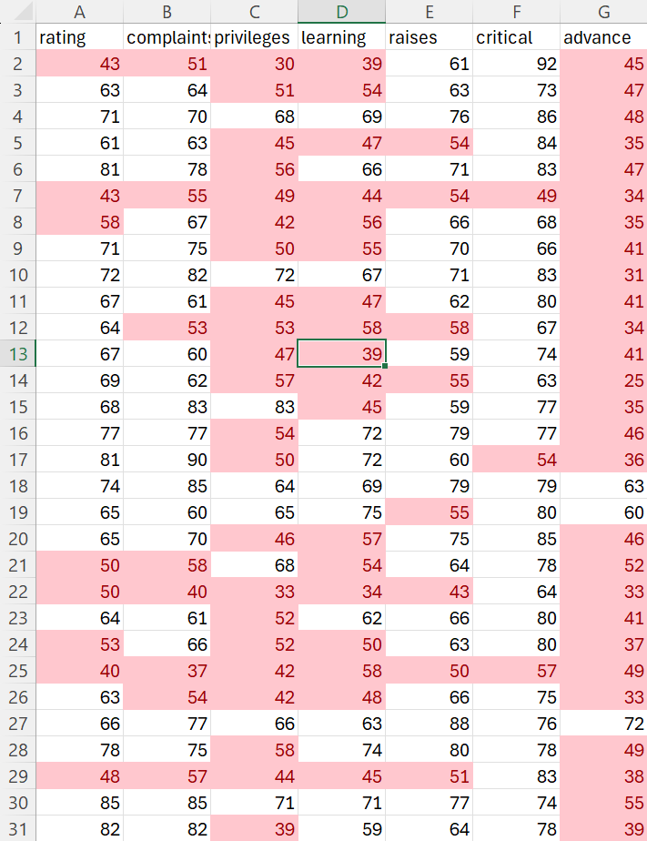
1.1.1.4 Observations
-Each column has at least 2 cells =<50 -Advance attitude perform poorly in an standard normal look(Bigger = Better) -Critical attitude excelling in an standard normal look(Bigger = Better) -
1.1.1.5 Filtering + Formulas
(How to Follow) -Select group of Cells, Rows or Columns -Use Condition Formating (In Home) -Highlight cells, duplicate
-Select group of Cells, Rows or Columns -Select Formulas -Use Average, Ma, Min
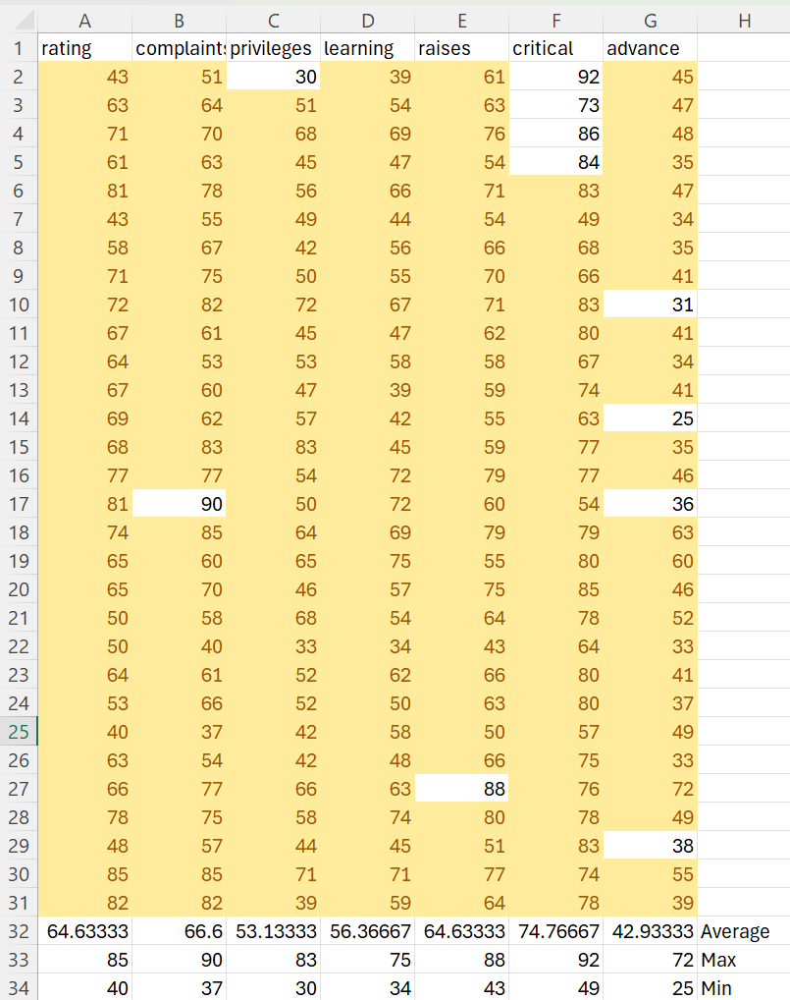
1.1.1.6 Observations
- 11 unique values that do not overlap/duplicated in another cell
- Highest value was Critical with 92, Complaint had the 2nd highest with 90, -> However that value appears to an outliar
-Minimum belongs to advance with 25 with privilege 2nd lowest with 30. -Critical with the highest average with 74.77 complaint 2nd highest with 66.59
1.1.1.7 Graphs
(How to Follow) -Select group of Cells, Rows or Columns -In the setting insert, select graph or recommend graph
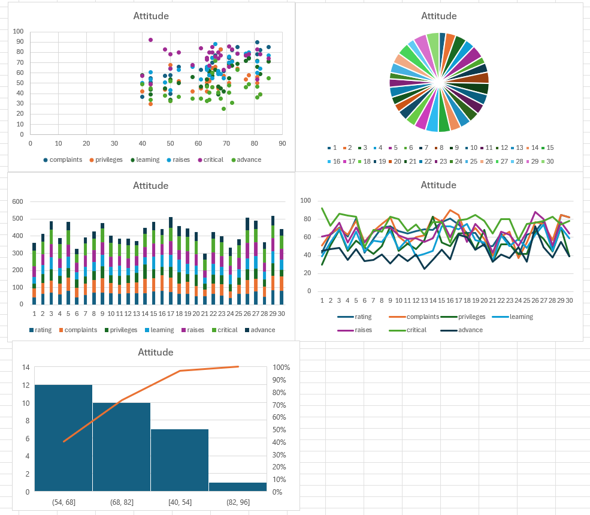
1.1.1.8 Observations
- Bar graphs and pie graphs are not ver useful and do not provide any sort of information or trends
-The scatter plot is useful seeing where the cluster is and having a visual provided of where those values are in relation to each other ->Trends Complaints and learning has a postie correlation in related to rating. The higher the rating the higher the complaint attitude
-Statics chart helpful in showing where the concentration of the overall data is.
-Best graph that represent the data was Scatter plot, ->Easier to individual points and groups. ->Can apply basic functions, or understanding to see trends -> Overall seem that those with Combative attitudes excelled, those who were humble seemed to a had a positive trend and privileged posh attitudes performed worse than counterparts.
1.1.1.9 Summary
-Applied skills learned from Monday -Found trends patterns and made conclusions -Researched possible data sets and other techniques
1.1.2 Friday
1.1.2.1 Overview
-Cleaning and filtering data in relation to soil samples -Applying techniques learned from Monday and Wednesday to data set -Document all necessary actions for repeatable research -Find a story in the data
1.1.2.2 Data Information
-Data is from the USDA -Multiple different data sets that could be chosen ->Friday’s focuses on solid yield from 1984 - 1993 -Specific data can be found pressing the link Data from Tillage and cropping effects on soil quality indicators in the northern Great Plains
-The study provides insights into how soil properties respond to crop rotation and tillage practices under rainfed conditions in a semiarid continental climate
1.1.2.2.1 Column Name and Information
PLOT: Plot number, identifying the specific plot where the data was collected. REP: Replicate number, indicating the repetition of the experiment or sampling within the plot. ROTATION: Crop rotation system used in the experiment, typically represented by a code. -TILLAGE: Tillage treatment, also represented by a code (e.g., T1, T2). -DEPTH: Soil sampling depth (in cm). -SBD: Soil bulk density (g/cm³). -EC: Electrical conductivity (dS/m), a measure of soil salinity. -PH: Soil pH level. -NO3N: Nitrate nitrogen (mg/kg), an indicator of soil nitrogen content. -SOC: Soil organic carbon (mg/kg). -TN: Total nitrogen (mg/kg). -PMN: Potentially mineralizable nitrogen (mg/kg). -POMLF: Particulate organic matter light fraction (mg/kg). -POMSF: Particulate organic matter small fraction (mg/kg). -POMT: Total particulate organic matter (mg/kg). -POMSOM: Particulate organic matter as a percentage of soil organic matter. -MBC: Microbial biomass carbon (mg/kg). -MBN: Microbial biomass nitrogen (mg/kg)
1.1.2.3 Intial Observation
(How to Follow) -Select group of Cells, Rows or Columns -Select column with depth,(Step1) -select all 7.5cm (Step2) -shift arrow -> 4 rows (Step3) -In the setting insert, select graph or recommend graph(Step4) -For this we used a Column cluster(reccomended)
1.1.2.3.1 7.5 cm depth
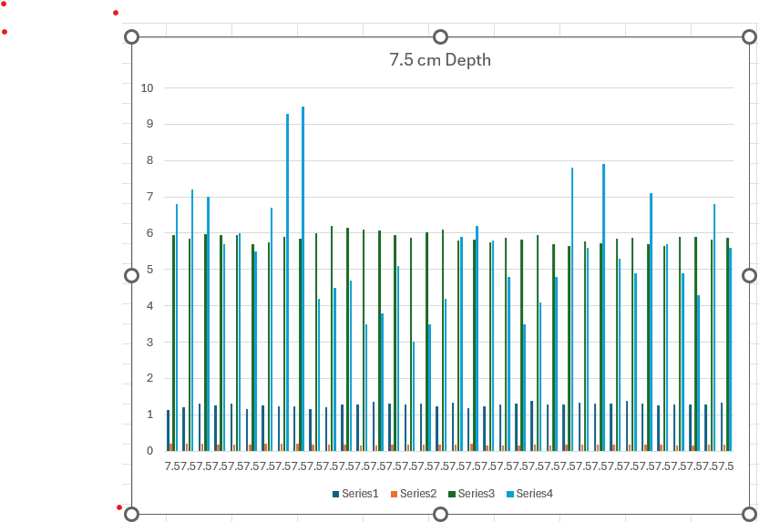
1.1.2.3.2 15 cm depth
-Repeats steps, changing 7.5 to 15

1.1.2.3.3 30 cm depth
-Repeats steps, changing 7.5 to 30
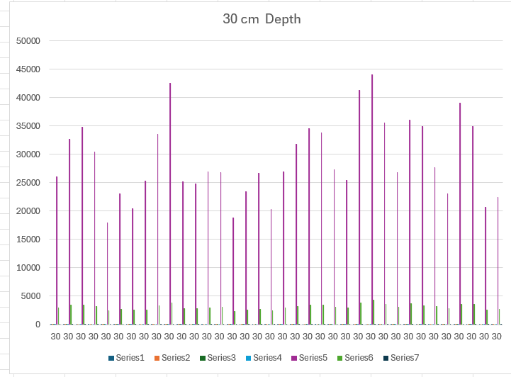
1.1.2.4 observations
-On Graphs 2 & 3 seem to lacking a series 4 and both have high series 7 -On Graph 1 lacks series 5-7 and series
1.1.2.5 Focus + 2nd graph
-Focused on 2 columns ph and NO3N ->PH level and nitrogen.
-Highlighted each PH and NO3N for each respective depth -Selected graphs for each a line graph
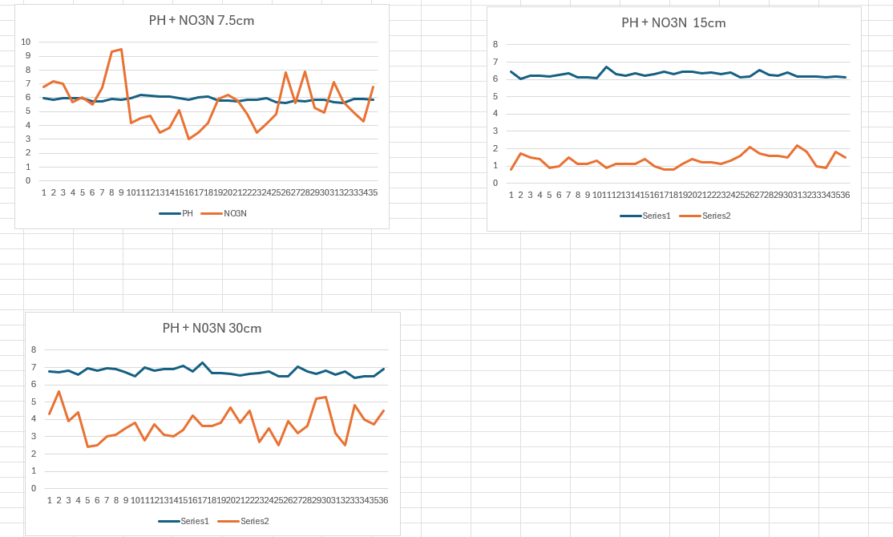
1.1.2.5.1 Observations
-Depth seems to correlate to steadier levels in PH and N03N to 15cm -15cm depth seems to the best to hold consistent level in PH and N03N -7.5cm depth has the largest variance highest Max in NO3n -30cm depth had the lowest valley in NO3N
1.1.2.6 Formatting
-Highlight cells rule, less than value (6.25) -Highlighted each PH and NO3N for each respective depth
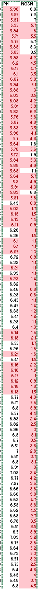 ##### Observations
-30 + 15 cm depths’ nitrogen is below 6.25 cm -7.5cm depth’s PH is below 6.25
1.1.2.7 Summary
-Worked with team lead and Professor at data sets and possible ideas -Discussed what expectations were set and what documentation should look like -Worked on USDA data set -Applied skills and tools to dataset
1.1.2.8 Notes for next work
-Larger and more background information on a dataset is useful -Lacked comparsion test to 1984 data set -Extended research into subject provides a working platform -Large data sets become complicated to work with and see at once on excel
1.2 Week 2 - 09/02 ~ 09/06
1.2.1 Wednesday & Friday Pivot Graph
1.2.1.1 Histogram
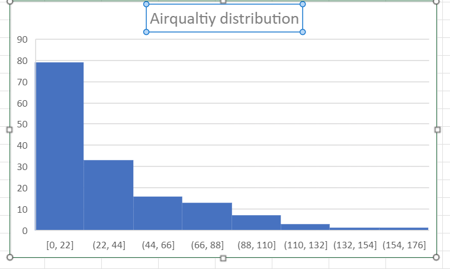
I am using the airquality data set, which is has 6 columns. Columns: Ozone,Solar.R,Wind,Temp,Month,Day Ozone: Concentration of ozone in the atmosphere, measured in parts per billion (ppb). Solar.R: Solar radiation in the atmosphere, measured in langleys (a unit of energy per unit area). Wind: Wind speed, measured in miles per hour (mph). Temp: Temperature, measured in degrees Fahrenheit (°F). Month: Month of the year, represented as an integer (e.g., 1 for January, 2 for February, etc.). Day: Day of the month, represented as an integer.
Location: Recorded from New York
Span- May-September
I use excel to clean the data, remove all the rows which have NA values,
1.2.1.2 Steps
1- Select all cells 2- Apply Filter 3- Select only Rows with NA 4- Delete Rows 5- Select other Rows 6- Repeat from 3 if more NA’s
After I did an exploration analysis
1.2.1.3 Histogram
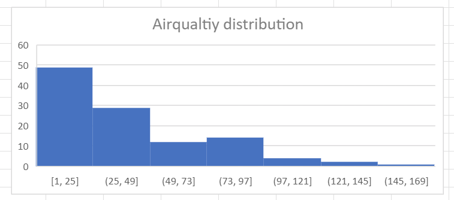
Ranges and proportions are similar to before cleaning
1.2.1.4 Focused Data
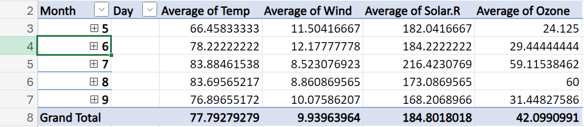
1.2.1.5 Graph
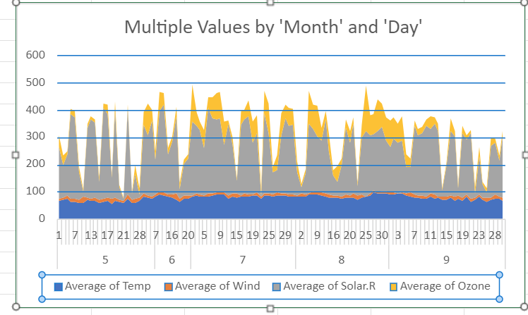
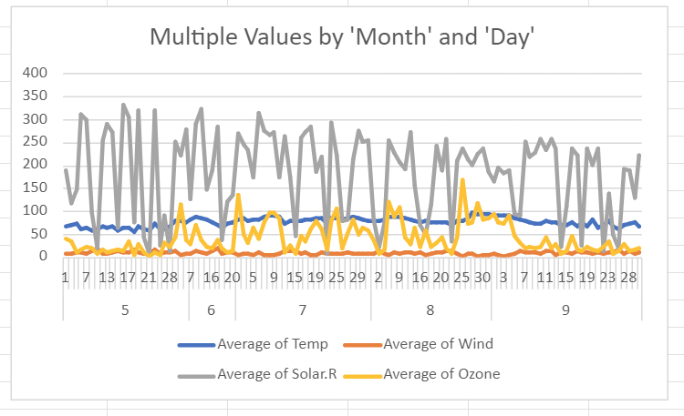
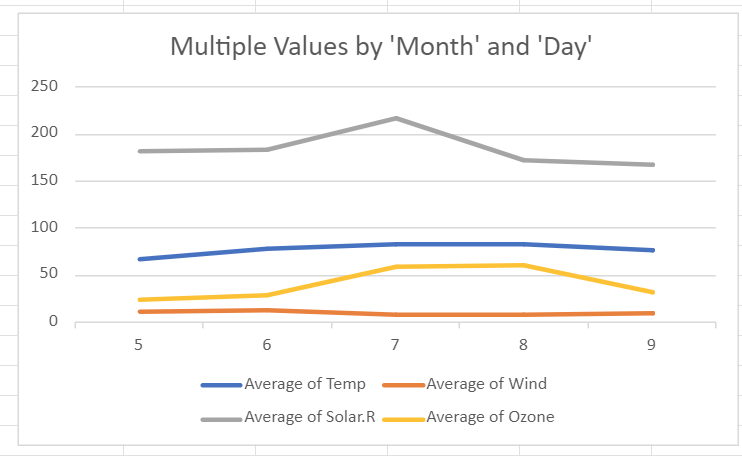
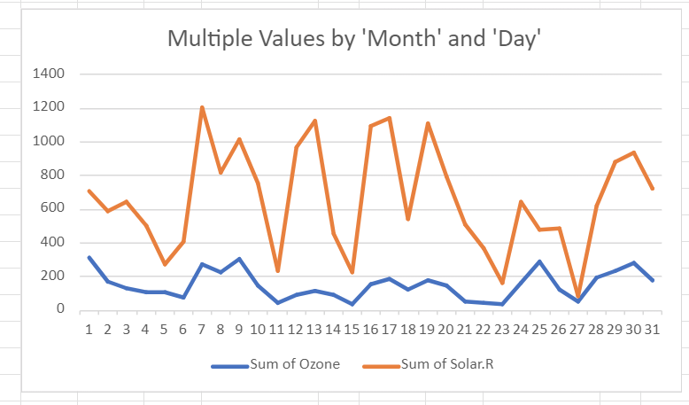
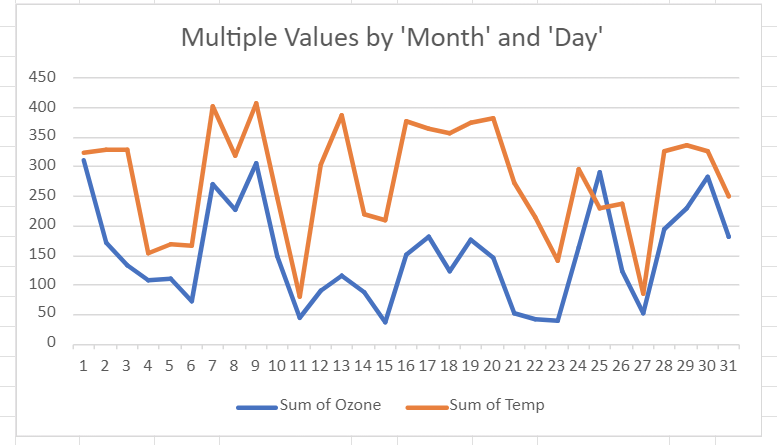
1.2.1.5.1 Observations
The months observed are May, Jun, July, August, and September Average Solar Radiation has an Inverse Relationship with Wind Ozone has a positive correlation with Solar R
On closer day to day Ozone and Temp have identical trends Ozone mimics radiation but on lower scale
Inverse relationship between Solar Radiation and Wind: This could occur because higher solar radiation typically results in warmer, more stable air masses, which may reduce wind speed. Wind is often driven by differences in air pressure, and if the atmosphere becomes more uniform due to increased solar heating, wind speeds may drop. Also, high-pressure areas, which are associated with clear skies and stronger solar radiation, often have lighter winds compared to low-pressure areas.
Positive correlation between Ozone and Solar Radiation: Ozone concentration in the lower atmosphere (troposphere) can increase with solar radiation, especially during the summer months. This is because ozone is formed through photochemical reactions involving sunlight and pollutants like nitrogen oxides and volatile organic compounds (VOCs). Therefore, higher solar radiation provides the energy needed to drive these reactions, leading to higher ozone levels.
Day-to-day identical trends between Ozone and Temperature: Ozone levels often increase with higher temperatures. This is largely due to the fact that photochemical reactions leading to ozone formation are more active at higher temperatures. Additionally, on warmer days, there is typically more stagnant air, which can trap pollutants and increase ozone levels. Hence, the similar trends between temperature and ozone levels.
Ozone mimicking Solar Radiation but on a smaller scale: The pattern here suggests that while solar radiation directly affects ozone formation, other factors such as pollution levels, temperature, and atmospheric mixing also play significant roles in determining actual ozone concentrations. So, while the trend is similar, the scale is smaller because ozone is dependent on several additional variables beyond solar radiation alone.
These relationships could reflect broader atmospheric and environmental patterns, particularly related to summer months when sunlight and temperature both peak, driving many of these processes.
1.2.2 Friday
1.2.2.1 Intro 1.0
USDA data set Focused data sets Projection of Midterm Project
1.2.2.2 USDA 1.1
The USDA (United States Department of Agriculture) is a federal agency responsible for overseeing agriculture, food safety, natural resources, rural development, and related areas in the United States. Founded in 1862, its primary mission is to support farmers, promote agricultural production, and ensure a safe and affordable food supply. The USDA works to improve the economy, provide food assistance programs, and protect the environment. It plays a key role in creating and implementing policies that impact farming, forestry, rural communities, and conservation efforts.
The USDA collects and records a wide range of data across various sectors, including crop production, livestock, economic and environmental statistics, and food security. They compile data on crop yields, prices, weather patterns, and soil quality, along with data related to rural development and economic conditions. In addition, the USDA monitors food safety and nutrition, conducting surveys on food consumption, food assistance programs, and the nutritional health of Americans. They also record information on natural resource usage and conservation efforts, aiming to promote sustainable agricultural practices.
This data is used for several purposes. It helps guide policy decisions related to agriculture and food security, ensuring that food production remains stable and resilient. The data supports research, informs farmers and agribusinesses about market trends and conditions, and helps policymakers create programs that improve rural communities and the environment. Additionally, USDA data informs trade negotiations and decisions on subsidies or tariffs for agricultural products. On a broader scale, the data is used to track climate change’s effects on agriculture and promote practices that can mitigate these effects.
1.2.2.3 Focused Data set
Geographic location - description Fields H1, H4, and H5 on the Area IV Soil Conservation Districts Cooperative Research Farm near Mandan, North Dakota USA. Fields H1 and H5 align with the 1984 experiment, while field H4 aligns with the 1993 experiment. *ISO Topic Category environment farming Ag Data Commons Group Long-Term Agroecosystem Research Northern Plains National Agricultural Library Thesaurus terms tillage; soil quality; Great Plains region; long term experiments; cropping sequence; soil conservation; cooperative research; farms; North Dakota; spring; grazing intensity; pastures; soil types; soil sampling; soil density; electrical conductivity; soil pH; nitrate nitrogen; soil organic carbon; nitrogen; particulate organic matter; microbial carbon; infiltration rate; stover; biomass production; laboratory techniques; combustion; crop rotation; continental climates
1.2.2.3.1 Overview of Research
The research on tillage and cropping effects on soil quality indicators in the northern Great Plains highlights the significant role of cropping systems in enhancing soil health. Various studies indicate that diverse cropping practices, particularly those incorporating cover crops and reduced tillage, can lead to improved soil quality metrics.
Impact of Crop Diversity Increased crop diversity, such as incorporating cover crops, enhances soil organic carbon (SOC) and microbial biomass carbon (MBC) compared to monoculture systems(Feng et al., 2020). Crop rotation systems have shown to improve soil aggregate stability and enzyme activity, which are crucial for nutrient cycling(Feng et al., 2020). Tillage Practices No-till practices have been associated with higher SOC and improved soil structure, particularly in the topsoil(Fiorini et al., 2020)(Liebig et al., 2004). Long-term studies indicate that continuous cropping with no-till significantly enhances soil nutrient availability and reduces erosion risks(Liebig et al., 2004). Microbial Community Dynamics The composition and diversity of soil bacterial communities are influenced more by cropping systems than by crop identity, suggesting that management practices are critical for soil health(Ouverson et al., 2021). While these findings underscore the benefits of diverse cropping systems and reduced tillage, it is essential to consider that not all practices yield uniform results across different soil types and climatic conditions, indicating a need for tailored approaches in agricultural management.
1.2.2.4 Objectives
1.2.2.4.1 Main objective
Assess the impact of tillage practices: Compare soil properties (e.g., bulk density, organic matter, pH) across different tillage systems (e.g., T1, T2) to determine how tillage affects soil health and suitability for agriculture.
1.2.2.4.2 Other possible research points
Analyze crop rotation effects: Evaluate how different crop rotation practices impact soil fertility and microbial biomass by analyzing nitrogen levels, organic carbon, and other key metrics.
Examine soil depth influence: Investigate how soil properties change with depth (e.g., 7.5 cm) and assess whether deeper soil layers are more or less fertile.
Track year-by-year changes: Observe trends in soil health and fertility over time by analyzing patterns in the dataset based on yearly measurements, if time-based data is included.
Microbial biomass and soil fertility: Investigate how microbial biomass (carbon and nitrogen) relates to soil fertility across different management practices.
Particulate organic matter (POM) impact: Explore the role of particulate organic matter in contributing to overall soil organic matter (POMSOM) and its effect on agricultural productivity.
Correlation between EC, pH, and nutrient availability: Study how soil electrical conductivity (EC) and pH affect the availability of key nutrients like nitrate nitrogen (NO3N), organic carbon, and total nitrogen.
1.2.2.5 Summary
The USDA supports agriculture, food safety, rural development, and environmental protection in the U.S., collecting data on crop production, soil quality, and food security to inform policy and guide farmers. Research from fields in North Dakota focuses on the effects of tillage and crop rotation on soil health, highlighting the benefits of reduced tillage and crop diversity. The data evaluates key soil properties like bulk density, organic carbon, and microbial biomass to assess the impact of these agricultural practices. The goal is to promote sustainable farming by understanding how different management systems affect soil quality and productivity over time.
1.3 Week 3 - 09/09 ~ 09/13
1.3.1 Wednesday

1.3.1.1 Overview
Document is CO2_DataSet Working with Tableau
1.3.1.2 Background Information
The CO2 data frame has 84 rows and 5 columns of data from an experiment on the cold tolerance of the grass species Echinochloa crus-galli. uptake of six plants from Quebec and six plants from Mississippi was measured at several levels of ambient concentration. Half the plants of each type were chilled overnight before the experiment was conducted.
This dataset was originally part of package nlme, and that has methods (including for [, as.data.frame, plot and print) for its grouped-data classes.
1.3.1.2.1 Column Information
Plant an ordered factor with levels Qn1 < Qn2 < Qn3 < … < Mc1 giving a unique identifier for each plant.
Type a factor with levels Quebec Mississippi giving the origin of the plant
Treatment a factor with levels nonchilled chilled
conc a numeric vector of ambient carbon dioxide concentrations (mL/L).
uptake a numeric vector of carbon dioxide uptake rates (mol/2μmol/m 2sec).
1.3.1.3 Observations
All chilled plants had lower uptakes than there not chilled equvilent(Sheet 1)
If all chilled plants in the data show lower CO2 uptakes than their non-chilled equivalents, it indicates that lower temperatures may have negatively affected the plants’ ability to absorb CO2. This is likely because chilling can slow down metabolic processes, including photosynthesis, which is crucial for CO2 uptake. Reduced enzyme activity at lower temperatures could hinder the plants’ photosynthetic efficiency, leading to less CO2 being absorbed. Additionally, chilling may cause stress in some plant species, further limiting their ability to function optimally. It would be important to explore other environmental or physiological variables in the data to confirm if the drop in CO2 uptake is consistently linked to temperature or if other factors contribute to this trend.
If plants had higher CO2 uptake in Quebec compared to Mississippi, this difference could be influenced by various environmental factors. Quebec, with its cooler climate, may provide more optimal conditions for photosynthesis in some plant species, particularly if they are adapted to cooler temperatures. Lower temperatures can reduce the rate of respiration, allowing more energy to be directed toward photosynthesis, which increases CO2 uptake.
In contrast, Mississippi’s warmer climate could lead to higher respiration rates, reducing the net CO2 uptake. Additionally, other factors like humidity, soil composition, and light exposure might vary between the regions, contributing to the observed differences. Exploring these environmental and regional variables in the dataset would help clarify the specific reasons behind the greater CO2 uptake in Quebec.
Mississipi plant had tighter cluster inregarding to measurements taken(Sheet 4)
A tighter cluster of measurements in Mississippi plants suggests that there is less variability in CO2 uptake under the conditions tested. This could be due to more consistent environmental factors such as temperature, humidity, and light intensity in Mississippi. If the climate in Mississippi is more stable during the period of measurement, the plants may experience fewer fluctuations in growing conditions, leading to more uniform physiological responses and, thus, more consistent CO2 uptake measurements.
Additionally, if the Mississippi plants are of the same species or have similar adaptive traits to their local environment, this genetic or physiological uniformity could result in less variation in how they respond to environmental stimuli. In contrast, regions with more variable climates, like Quebec, might show a wider range of responses due to changing temperatures or other fluctuating environmental factors.
The higher variance and standard deviation in CO2 uptake measurements for plants in Quebec, compared to Mississippi, suggest that there is greater variability in how plants in Quebec respond to environmental conditions. This could indicate that the growing conditions in Quebec are less stable or more variable, leading to more fluctuations in plant performance. For instance, Quebec’s climate may experience more extreme temperature shifts, varying levels of sunlight, or differences in humidity, all of which can affect CO2 uptake differently across plant species or individual plants.(Sheet 6)
Higher variance also implies that certain plants in Quebec are either more sensitive or more adaptive to these environmental changes, showing a broader range of responses, from low to high CO2 uptake. In contrast, Mississippi’s plants, with their tighter clustering and lower variability, are likely experiencing more consistent conditions, resulting in more uniform uptake patterns. This highlights that the environmental or biological factors affecting plant performance are more varied in Quebec, possibly due to its cooler and more fluctuating climate.
1.3.1.4 Summary
Differenet reagions provide different enviroments for plants to respond
Chilled plant perform at a lower rate than nonchilled regardless of enviromnet or species
1.3.2 Friday

1.3.2.1 Overview
Focused look on plant usage on mineral B and Ca Understanding what future food production prediction may look from such results
1.3.2.1.1 BackGround Information
In a study of wheat cultivation in the northern Great Plains, researchers investigated how different crop rotations affect wheat performance and the relationship between soil and grain mineral concentrations. The study compared spring wheat (fertilized, CSW) with wheat following 5 years of perennial forages, including alfalfa, intermediate wheatgrass (fertilized, IWG), and a mixture of alfalfa and intermediate wheatgrass (MIX). The wheat grown after alfalfa showed the highest yield, superior thousand kernel weight (TKW) compared to CSW, and increased crude protein (CP) concentration relative to IWG and CSW. However, wheat following alfalfa had lower grain zinc (Zn) concentration compared to IWG.
Wheat following IWG exhibited higher concentrations of iron (Fe) and manganese (Mn) compared to the MIX treatment, higher magnesium (Mg) than CSW, and lower sulfur (S) concentration across all treatments. Multivariate correlation analysis revealed that plant available soil minerals were positively correlated with grain boron (B), Mg, Mn, and S concentrations, while they were negatively associated with grain Zn and calcium (Ca) concentrations.
The results indicate that incorporating perennial forage phases into wheat cropping systems can enhance wheat yield and CP levels, but it may also reduce certain soil mineral availability. This suggests that while rotating perennials can improve some aspects of soil quality, it could also affect soil fertility by lowering the availability of certain essential minerals.
1.3.2.1.2 Soil
In this study, soil measurements provide insights into the availability of essential minerals that plants need for growth. Specifically, the soil measurements include:
Plant Available Soil Minerals: These measurements assess the concentration of minerals in the soil that are accessible to plants. Key minerals analyzed in this study include boron (B), magnesium (Mg), manganese (Mn), sulfur (S), zinc (Zn), calcium (Ca), and others. These soil concentrations help determine how well nutrients are supplied to the crops.
Correlation with Grain Mineral Concentrations: By examining the relationship between soil mineral availability and the mineral content in wheat grains, the study investigates how variations in soil nutrients influence the nutrient profile of the harvested grain. This correlation helps to understand how soil nutrient management affects the nutritional quality of the wheat produced.
Impact of Crop Rotation: The study explores how rotating perennial forages into wheat cropping systems affects soil mineral availability. For instance, it assesses whether different crop rotations lead to changes in the levels of plant available soil minerals and how these changes impact wheat yield and grain mineral concentrations.
Overall, soil measurements in this study help in understanding the dynamics of soil fertility, the efficiency of nutrient uptake by crops, and the broader implications for crop performance and nutritional quality.
In the context of this study, soil samples were likely collected before planting to assess the plant available mineral concentrations in the soil prior to wheat cultivation. This allows researchers to establish a baseline of nutrient availability and understand how different crop rotations and management practices affect soil fertility.
By analyzing soil conditions before planting, the study can correlate these initial nutrient levels with subsequent wheat performance and grain mineral concentrations. This approach helps to determine how soil nutrient availability influences crop yield and grain quality throughout the growing season.
1.3.2.1.2.1 Focused Context
In this study, Boron (B) and Calcium (Ca) were measured both in soil (plant-available form) and wheat grain to assess their correlation. Boron and Calcium are essential nutrients for plant growth, with their availability in the soil directly influencing the nutrient content of harvested wheat grain. These measurements help in understanding how different cropping systems (such as continuous wheat or rotations with perennials) affect the nutrient dynamics in both soil and plant tissue.
1.3.2.1.2.2 Background Information on Mineral Use
Boron (B) is vital for cell wall formation, reproductive growth, and nutrient transport within plants. Deficiency in B can lead to reduced yields and poor seed development, especially in crops like wheat. In semi-arid soils, Boron levels can fluctuate, influencing plant uptake and grain mineral content.
Calcium (Ca) plays a critical role in strengthening cell walls, regulating enzyme activity, and supporting root and shoot development. A sufficient supply of Calcium ensures healthy plant structure and resistance to disease, but excessive or insufficient levels can lead to nutrient imbalances that affect plant health and grain quality. Soil Calcium levels are key to determining its availability to plants and eventual presence in grains.
1.3.2.1.3 Observations:
Dashboard 1 Sheets 2 and 3
Grain Ca vs Soil Ca:
Across all perennial treatments (Alfalfa, CSW, IWG, and MIX), the grain calcium (Ca) concentration appears to be relatively consistent, even though the soil calcium levels vary slightly by depth (0-5 cm and 5-10 cm). The variation in soil Ca levels across the treatments does not appear to have a significant effect on the grain Ca concentration, as the bars representing grain Ca are mostly uniform across the treatments. Grain B vs Soil B:
In contrast, the grain boron (B) concentration shows a stronger association with soil B levels, especially in the Alfalfa and CSW treatments. For example, the Alfalfa treatment (0-5 cm) shows that higher soil B concentration is reflected in higher grain B concentration, while other treatments like CSW and MIX show more moderate levels.
1.3.2.1.4 Inferences:
Calcium (Ca):
The weak correlation between soil Ca and grain Ca suggests that wheat plants might regulate Ca uptake, maintaining relatively consistent levels in grain even when soil Ca availability varies. This could imply that wheat plants prioritize Ca for grain formation, regardless of soil supply, or that Ca uptake is less responsive to soil concentration changes within this range. Boron (B):
There is a clearer relationship between soil B and grain B, indicating that wheat’s B uptake may be more directly influenced by soil B availability. Boron is crucial for reproductive development in plants, and its availability in the soil could directly affect the levels found in wheat grains. General Patterns in Rotation:
Rotations involving perennial forages like alfalfa appear to increase soil B availability, which translates into higher grain B concentrations compared to continuous spring wheat (CSW). This suggests that integrating perennials into cropping systems might enhance the availability of specific micronutrients such as boron, potentially influencing the nutritional quality of the grain.
1.3.2.1.5 Observations
Sheet 1
Potassium (K) indeed has the highest concentration (mg/kg) among all the minerals across different perennial treatments (Alfalfa, CSW, IWG, and MIX). This indicates that K is more abundant in the soil compared to other minerals like Boron (B), Aluminum (Al), Calcium (Ca), and Copper (Cu).
Calcium (Ca) also appears in relatively high concentrations, particularly in the CSW and MIX treatments, where it shows levels close to Potassium, though slightly lower.
Boron (B), in contrast, has much lower concentrations across all treatments, which confirms your earlier observation of lower Boron levels. The variation in Boron levels across treatments is minimal, with no significant spikes.
Aluminum (Al) and Copper (Cu) show the lowest concentrations overall, with minimal differences between the different treatments.
Additional Observations: CSW and MIX treatments appear to have the highest levels of K and Ca compared to IWG and Alfalfa treatments. Boron and Aluminum remain consistently low across all treatments, reinforcing the idea that these minerals might be less available in the soil or more rapidly depleted during crop growth.
1.3.2.1.6 Observations
Sheet 4
Soil Boron (B) Concentration:
The soil Boron concentrations vary across different treatments (Alfalfa, CSW, IWG, and MIX) and soil depths (0-5 cm and 5-10 cm). In the Alfalfa treatment, soil B is consistently higher, with values reaching around 0.6 mg/kg in both depth layers. The CSW treatment shows relatively lower soil Boron concentrations, mostly clustering between 0.2-0.4 mg/kg. IWG and MIX show intermediate soil Boron levels, with slightly higher concentrations at 0-5 cm compared to 5-10 cm. Grain Boron (B) Concentration:
Grain B levels are much lower than soil B levels, with most of the values falling between 0.02 mg/kg and 0.07 mg/kg, indicating that only a small fraction of available Boron in the soil is taken up by the plants and transferred to the grain. The MIX treatment shows the highest grain B concentrations, particularly at the 0-5 cm depth. This suggests that plants under the MIX rotation were more efficient in uptaking Boron from the soil compared to other treatments. Other treatments like CSW and IWG have lower grain B levels, despite having moderate soil B concentrations, indicating a lower Boron uptake efficiency. No Measurements in Some Cells:
Certain cells show “No Measure,” indicating gaps in the data for specific treatment and depth combinations. Inferences: Boron Uptake Efficiency: The difference between soil B and grain B suggests that Boron uptake efficiency varies across treatments. For example, even though soil B levels are high under Alfalfa, the grain B concentration remains relatively low, indicating that the plants might not be fully utilizing the available Boron.
Treatment Effect: The MIX treatment seems to have enhanced Boron uptake, resulting in higher grain B levels despite moderate soil B concentrations, suggesting that this treatment may improve nutrient acquisition.
Depth Influence: Soil depth plays a role in Boron availability, with slightly higher soil B concentrations in the 0-5 cm layer across most treatments. However, this does not always translate into higher grain B concentrations.
1.3.2.2 Summary
The data provided shows the relationship between soil and grain concentrations of minerals like Boron (B) and Calcium (Ca) across different cropping systems and soil depths. In the case of Boron, soil concentrations are generally higher than the corresponding levels in the grain, indicating that although Boron is present in the soil, the plants’ uptake and transfer to the grain are limited. Among the different treatments, the MIX rotation (alfalfa and intermediate wheatgrass) appears to facilitate the highest Boron uptake efficiency, showing relatively higher grain B concentrations despite moderate soil levels. Other treatments, such as CSW (continuous spring wheat) and IWG (intermediate wheatgrass), demonstrate lower Boron uptake efficiency, with grain B concentrations remaining low even when soil Boron levels are moderate.
For Calcium, the relationship between soil and grain concentrations is more linear, with higher soil Ca levels correlating with higher grain Ca concentrations. This is especially evident in the CSW and MIX treatments, where soil Ca levels are high, and grain Ca uptake is relatively efficient. The consistent uptake of Ca suggests that plants have a more stable mechanism for absorbing this macronutrient, regardless of the cropping system. In contrast, the variability in Boron uptake indicates that B availability and plant uptake are more sensitive to crop type, rotation, and soil depth. This insight highlights the potential for certain perennial rotations, like the MIX treatment, to enhance micronutrient uptake efficiency, particularly for nutrients like Boron that are essential in small quantities but crucial for plant growth.
These findings have significant implications for future food production, especially in the context of nutrient management in soils. As the global population grows, there will be increasing pressure to optimize crop yields while maintaining or enhancing nutritional quality. The data suggests that certain cropping systems can enhance the uptake of key nutrients like Calcium, but micronutrients such as Boron may be more challenging to manage. If future agricultural systems focus on rotations with perennial forages or mixed systems, it could lead to better nutrient efficiency and soil health, making food production more sustainable. However, continuous cropping of annual cereals without proper nutrient replenishment could result in micronutrient deficiencies, impacting both crop health and the nutritional quality of food.
1.4 Week 4 - 09/16 ~ 09/20
1.4.1 This is a markdown title
in markdown we can create lists: - item 1 - item 2 - item 3 - item 4
also we can create enumerate list 1. Hola 2. Hi 3. Namaste
we can do bold, also italic
# Here we are importing numpy with a nickname np
import numpy as np
arr = np.array([1, 2, 3, 4, 5])print(np.absolute(-1))
print(arr)1
[1 2 3 4 5]# list are native to python
my_list = [1,2,3,4,5]
print(my_list)[1, 2, 3, 4, 5]# We will using a lot of data frames, so we need pandas library
import pandas as pd
data = {'Ozone': [41, 36, 12], 'Temp': [67, 72, 74]}
df = pd.DataFrame(data)
print(df) Ozone Temp
0 41 67
1 36 72
2 12 741.4.1.1 4 Loading csv files
To load .csv files into a DataFrame. we use the pandas function read_csv:
df = pd.read_csv('airquality_datasets.csv')# Summary of the dataset
print(df.info())
print(df.describe())<class 'pandas.core.frame.DataFrame'>
RangeIndex: 153 entries, 0 to 152
Data columns (total 6 columns):
# Column Non-Null Count Dtype
--- ------ -------------- -----
0 Ozone 116 non-null float64
1 Solar.R 146 non-null float64
2 Wind 153 non-null float64
3 Temp 153 non-null int64
4 Month 153 non-null int64
5 Day 153 non-null int64
dtypes: float64(3), int64(3)
memory usage: 7.3 KB
None
Ozone Solar.R Wind Temp Month Day
count 116.000000 146.000000 153.000000 153.000000 153.000000 153.000000
mean 42.129310 185.931507 9.957516 77.882353 6.993464 15.803922
std 32.987885 90.058422 3.523001 9.465270 1.416522 8.864520
min 1.000000 7.000000 1.700000 56.000000 5.000000 1.000000
25% 18.000000 115.750000 7.400000 72.000000 6.000000 8.000000
50% 31.500000 205.000000 9.700000 79.000000 7.000000 16.000000
75% 63.250000 258.750000 11.500000 85.000000 8.000000 23.000000
max 168.000000 334.000000 20.700000 97.000000 9.000000 31.0000001.4.1.2 5. Visualizing the dataset
Let’s dive into visualizations using matplotlib. We’ll start with simple histograms and boxplots, then move on to correlation plots.
1.4.1.2.1 Histograms
Histograms help us understand the distribution of the variables. We’ll create histograms for Ozone and Temp.
import matplotlib.pyplot as plt
# Ozone Histogram
plt.figure(figsize=(8, 6))
plt.hist(df['Ozone'].dropna(), bins=20, color='blue', edgecolor='black')
plt.title('Distribution of Ozone Levels')
plt.xlabel('Ozone (ppb)')
plt.ylabel('Frequency')
plt.show()
# Temp Histogram
plt.figure(figsize=(8, 6))
plt.hist(df['Temp'].dropna(), bins=20, color='orange', edgecolor='black')
plt.title('Distribution of Temperature')
plt.xlabel('Temperature (°F)')
plt.ylabel('Frequency')
plt.show()
1.5 Week 5 - 09/23 ~ 09/27
1.5.1 Friday

This graph compares irrigation patterns against soil erosion across various soil types. The first chart shows the variation in the average values of irrigation (Avg. F11) across different soil types, with visible peaks indicating periods of higher water usage. The other two metrics (F22 and F29) show more subtle changes in factors potentially affecting erosion or soil quality. Overall, the data emphasizes the complex relationship between irrigation levels and the associated impacts on soil health and erosion under different agricultural conditions.
The USDA supports agriculture, food safety, rural development, and environmental protection in the U.S., collecting data on crop production, soil quality, and food security to inform policy and guide farmers. Research from fields in North Dakota focuses on the effects of tillage and crop rotation on soil health, highlighting the benefits of reduced tillage and crop diversity. The data evaluates key soil properties like bulk density, organic carbon, and microbial biomass to assess the impact of these agricultural practices. The goal is to promote sustainable farming by understanding how different management systems affect soil quality and productivity over time.
1.5.1.1 Focused Data set
Geographic location - description Fields H1, H4, and H5 on the Area IV Soil Conservation Districts Cooperative Research Farm near Mandan, North Dakota USA. Fields H1 and H5 align with the 1984 experiment, while field H4 aligns with the 1993 experiment. *ISO Topic Category environment farming Ag Data Commons Group Long-Term Agroecosystem Research Northern Plains National Agricultural Library Thesaurus terms tillage; soil quality; Great Plains region; long term experiments; cropping sequence; soil conservation; cooperative research; farms; North Dakota; spring; grazing intensity; pastures; soil types; soil sampling; soil density; electrical conductivity; soil pH; nitrate nitrogen; soil organic carbon; nitrogen; particulate organic matter; microbial carbon; infiltration rate; stover; biomass production; laboratory techniques; combustion; crop rotation; continental climates
1.5.1.1.1 Overview of Research
The research on tillage and cropping effects on soil quality indicators in the northern Great Plains highlights the significant role of cropping systems in enhancing soil health. Various studies indicate that diverse cropping practices, particularly those incorporating cover crops and reduced tillage, can lead to improved soil quality metrics.
Impact of Crop Diversity Increased crop diversity, such as incorporating cover crops, enhances soil organic carbon (SOC) and microbial biomass carbon (MBC) compared to monoculture systems(Feng et al., 2020). Crop rotation systems have shown to improve soil aggregate stability and enzyme activity, which are crucial for nutrient cycling(Feng et al., 2020). Tillage Practices No-till practices have been associated with higher SOC and improved soil structure, particularly in the topsoil(Fiorini et al., 2020)(Liebig et al., 2004). Long-term studies indicate that continuous cropping with no-till significantly enhances soil nutrient availability and reduces erosion risks(Liebig et al., 2004). Microbial Community Dynamics The composition and diversity of soil bacterial communities are influenced more by cropping systems than by crop identity, suggesting that management practices are critical for soil health(Ouverson et al., 2021). While these findings underscore the benefits of diverse cropping systems and reduced tillage, it is essential to consider that not all practices yield uniform results across different soil types and climatic conditions, indicating a need for tailored approaches in agricultural management.